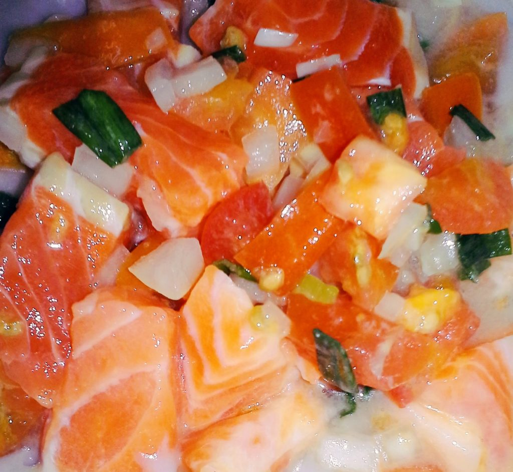
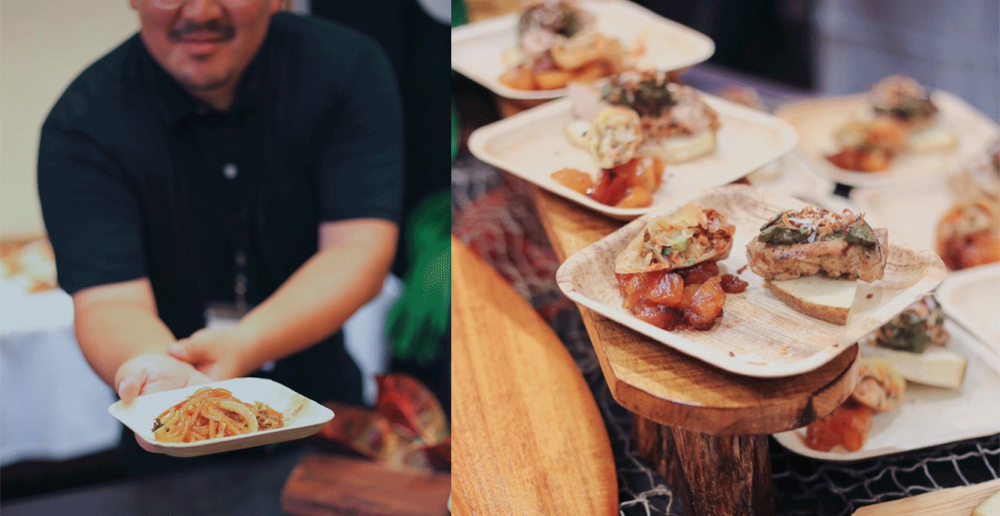
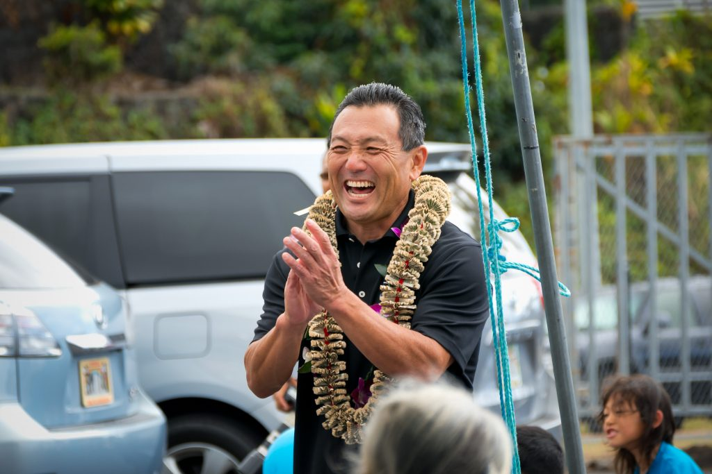

Taste of paradise
The best ideas are dreamed up when doing what you love. As Hawaii’s Bryan Fujikawa sat on his boat fishing, rocking quietly, the idea for Sun Dried Specialties was born. The fisherman –turned chef opened a small family business producing and selling local delicacies 19 years ago, which has evolved into the Kona Grill House – a culinary destination for local cuisine which people return to from all over. Chef Bryan is one of nine Hawaii and Asia-based Chefs who showcase their local cuisine at the second annual Hawai’i Kuauli Pacific and Asia Cultural Festival, at Kailua-Kona on May 17-19. These chefs, who work in various restaurants and hotels in the tourist mecca of Hawaii, are passionate about using locally produced, sustainable and traditional food, and promoting this unique cuisine to the many tourists who venture on their shores all-year round.
By Michelle Curran
Kealakekua on Hawai’i Island is famous for several things – Kealakekua Bay is where Captain James Cook perished and took his last breath; and it is where you will Kona Grill House – a hole-in-the-wall spot, where Chef Bryan Fujikawa creates his magic using all local products.
Back in 2000, Bryan made his living as a fisherman, but fate had other things in mind for the Kealakekua local.
One night, while out fishing, Bryan found he was being called to start his own business, after realising the dried fish he had grown up eating was disappearing from around the island.
He established Sun-Dried Specialties and together with his wife Rebecca and their two daughters, Bryan began drying the fish he caught from local waters, staying true to the old way of drying, using only fresh fish, Hawaiian salt, and sunshine.
The Sun-Dried Specialties logo of a sunbathing ahi quickly became recognisable for the best dried ahi, aku, and opelu in the state and eventually on the Mainland.
Twelve years later, Bryan opened Fishbowl – a small poke shop which has continued to grow over the years; and stocks more than a dozen different types of poke made fresh every day, as well as desserts Bryan’s daughter makes.
“I grew up eating and preparing Hawaiian cuisine my whole life…I always had a passion for creating and adding a twist to local food,” Bryan says.
His friends and family inspired him to become a chef and open his own place, he adds.
“I wanted a place we could all come and gather, talk stories, keep in touch and share our love of food – a place we could come together every night after a busy day at work.”
His small poke shop has evolved into Kona Grill House, and what started 19 years ago as a small family operation producing and selling dried fish has grown into a culinary destination for local cuisine that has people from not just Hawaii, but all over, returning time and time again.
 Chef Bryan Fujikawa serves up poke and his famous lobster cakes. CREDIT Ewalina Photography
Chef Bryan Fujikawa serves up poke and his famous lobster cakes. CREDIT Ewalina Photography
The food off the grill is “unforgettable” and Bryan’s customers like to say it is “five-star food out of a cardboard box”.
Bryan specialty lobster crab cakes are famous in these parts, as are his fish burgers, plus daily specials ranging from smoked prime rib to lobster mac and cheese.
Hawaiian cuisine is unique because it incorporates distinct styles of food from all over the world, Bryan says.
“Immigrants came together to share their style of food, from the Chinese to the Hawaiians, Filipinos, Portuguese.
“Hawaiian cuisine is so special because it showcases a history of different cultures combining parts of their culture in one dish.”
Using local produce in his dishes is the only way to go, and he only buys from local farmers, he says.
“I take pride in only using fresh island produce from local farmers, I believe in supporting local.”
Bryan buys his greens from the Honaunau-based Waiea Aquaponics, where the produce is well-taken care of, and he is never disappointed with anything he gets there.
He uses fish caught by local fishermen, and gets his meat from Wall Ranch in Kealakekua, who will hand-deliver anything he needs, when he needs it.
“We are all good friends,” he says.
Local produce is easy to come by if people are willing to take the time to do their research, and this helps to sustain local farming and fishing businesses.
There are also so many benefits of using local products, he adds.
“I would rather use produce from the Island over anywhere else, because I know where it comes from, and who is taking care of it.”
People are seeing these positives and choosing local more often, including the numerous tourists washing up on Hawaiian shores each year.
Bryan says he has had a lot of great experiences with tourists who visit his grill, and he keeps in touch with many of them.
Those who return annually let him know when they will be in town and can call in for some delicious food.
Serving high quality food with island flair while supporting other local businesses, in a place where everyone can come together to “talk story” and make life-long memories is what makes Bryan’s journey over the past two decades worthwhile.
He was delighted to be able to showcase some of his signature dishes at the
Hawai’i Kuauli Pacific and Asia Cultural Festival in Kailua-Kona, from May 17-19.
Bryan joined eight other chefs in the Taste of Pacific and Asia event at the festival, where they all created their signature dishes and the audience selected their favourite.
“Events like this are important to show Kona does have talented chefs who are creative and make food that people from all over the world love.
“These events are also great opportunities to introduce our island flavours to those unfamiliar with them.”
At the Taste event, Bryan whipped up Lobster Crab Cakes topped with Spicy Aioli Sauce; along with Teriyaki Furikake Salmon Poke; and his personal favourite Fresh Lomi Salmon Poke.
How to make Chef Bryan Fujikawa’s Fresh Lomi Salmon:
- Fresh fatty Salmon cut into cubes, bite size pieces.
- A handful sweet onion sliced
- A handful sliced green onions
- Hawaiian salt
Lomi Salmon. CREDIT Supplied.
Other chefs involved involved the event included Executive Chef at Courtyard by Marriott – King Kamehameha’s Kona Beach Hotel Roy Basillo; Executive Chef at Club Hokuli’a Muzzy Fernandez; Executive Chef at Royal Kona Resort George Gomes; and Angela Kenyon, the Executive Sous Chef at Kukio.
Chef Roy was born and raised in Waialua, a small sugar plantation town on the North Shore of Oahu; and it was in this multi-culturally diverse community he experienced the varied cuisines of Japanese, Hawaiian, Portuguese, Korean, Spanish, Chinese and his own Filipino heritage.
“Even from a young age, although I did not realise it at the time, I was so into flavours and textures and wondering how food can taste so good prepared in so many different ways,” Chef Roy says.
“In those times, food was grown in back yard gardens, we raised pigs, cows and chickens, and we fished for the oceans bounty – everything was fresh, clean and natural.”
Likewise, Chef Muzzy was raised on Oahu and gained a degree from the University of Hawaii West Campus in Culinary Arts. He has worked at Hualalai Four Seasons for 10 years under Chef James Ebreo and Chef Alan Wong.
He opened Jackie Rey’s Ohana Grill as Executive Chef for 10 years and employed at Kohanaiki Club for six years.
Currently, he is the Executive Chef at Club Hokuli’a using Hawaiian products, influenced by the many cultures in the melting pot of Hawai’i.
Another Hawai’i Island local, Chef George has over three decades of culinary experience with chef positions among top Big Island culinary locales, including Courtyard Marriott King Kamehameha Kona Beach Hotel and Mauna Kea Beach Hotel and Hapuna Prince Hotel, among many others throughout Hawai’i.
Chef Angela originally comes from the Adirondack Mountains in Upstate New York where both sides of her family have been producing maple syrup for generations.
Angela has lived on Hawai’i Island for the past 15 years, after transferring there from Italy, with the Four Seasons.
She has worked all over the world, but has worked at Kukio for almost five years.
Chef Angela has been heavily involved in the Kona Coffee Festival Recipe Contest for the last ten years and has won first place several times.
Japan’s Chef Kazuhiro Kimura and President of Connect to Life which provides wide ranges of food services such as; catering, food consulting, marketing, menu development, and cooking classes journeyed to Hawai’i to be part of the Festival; as did Chef Hong Eun Chun from Korea.
(Left) Chefs cooked up their favourites at the Taste of Pacific and Asia. CREDIT Ewalina Photography | (RIght) Delicious cuisine on offer at the Taste of Pacific and Asia event. CREDIT Ewalina Photography
Ulu (breadfruit) is in abundance throughout Hawai’i, and the Hawai’i Ulu Co-op (HUC) also had a presence at the Taste of Pacific and Asia.
Farmer-owned and operated, HUC was founded in 2016 to revitalise breadfruit as a viable crop and dietary staple for Hawai‘i.
The Co-op has since grown from nine to over 70 farmer-members on both Hawai’i Island and Maui.
Its main operations include aggregating, minimally processing and marketing ‘ulu – primarily for food service operations such as school and hospitals statewide, as well as for myriad restaurants, caterers and grocery stores.
The co-op also produces several ready-to-eat products including two flavours of ‘ulu hummus and a dairy-free ‘ulu chocolate mousse.
This summer it plans to launch a retail pack of steamed-frozen ‘ulu so consumers may enjoy greater year-round access to this sustainable, nutritious, local starch.
In addition to producing ‘ulu food products, the co-op continuously works to develop and deliver educational opportunities for producers and consumers.
For Chef Bryan, the highlight of being involved in the Taste event was seeing the younger generation of Kona come and experience unique Pacific and Asian cuisine.
“It is awesome to see the kids experience something like this at such a young age.
“It would be great to be able to inspire some of the younger generation to become chefs and make it their career.”
Now the festival is over, Chef Bryan will focus on building his business, he says.
“Right now, I’m excited to see where Kona Grill House is going.
“I am aiming for more pop-ups on the Mainland, and potentially getting my name out there, in Japan.”
He adds he is extremely blessed and excited for the future – one which includes the abundance of fresh, delicious and unique foods from Hawai’i Island.
With so much fresh food at their finger-tips, it is only natural for Hawaiian chefs, like Chef Bryan and everyone involved in the Taste of Pacific and Asia event to make use of this abundant supply in their cuisine, and to showcase the traditional and divine flavours of this Pacific paradise.
Tourists are embracing the unique foods, wanting to try more and sidestepping burgers and fries.
Hawai’i Island is setting an example, with chefs using sustainable, local and indigenous products to create amazing cuisine.
Chef Bryan. CREDIT Supplied.